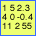
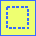
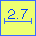

The toolbox features a
column of icons for various modes of
interaction. The principle is that the tool must be selected to be able
to create new objects such as particle boxes or filament nodes.
- Pointer (arrow): Default tracking mouse movement and moving existing objects around.
- Voxel recorder (numbers): Recording values of voxels to savable text.
- Selection (dashed square): Selection of regions for
statistics or cropping.
- Measure (length bar): Measure distances between mouse
clicks.
- Boxing (box and circle): Turn on particle picking.
- Filament (linked nodes): Turn on filament picking.
- Tomography marker (dot): Turn on marker creation.
- Tomography markers (multiple dots): Select multiple markers in an
image for dragging.
- Crystallography (array of dots): Analyze a crystallographic diffraction pattern.
- Helix (helical pattern): Analyze a helical diffraction pattern.
- Models (linked components): Turn on
modeling with components and links.
- Help: Link to browser-based documentation.
Analysis tools
 Recording voxels
The voxel recording tool opens a text dialog box where any subsequent clicks on voxels within the image window results in recording those locations and values. The text area can be saved as a text file for further analysis.
 Selecting regions
The selection tool opens a dialog box with a choice of the shape of the region of interest. This can be used to calculate the statistics within that region. Alternatively, the image can be cropped to the selected region with the "Image/Crop" menu item. Although the oval and spherical shapes will work with cropping, a full rectangular image is always produced.
 Measuring distances
The measurement tool reports the distance between mouse clicks in real space units. This means that the pixel size is used to estimate real distances between successively selected pixels. It is therefore important to have the correct pixel size specified. |